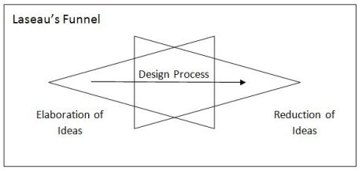
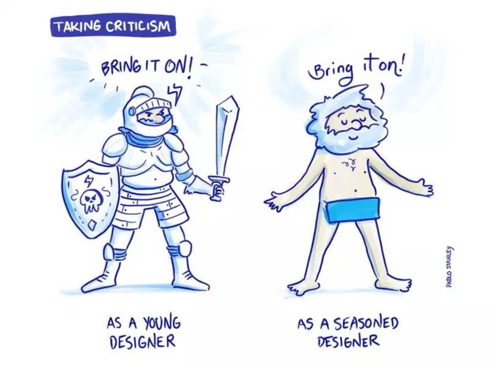

#1 Navigate through ambiguity
When I started working on my intern project, I was confused because the topic was very open. The project scope included multiple hardware products and there were unlimited directions for me to explore. Intimidating as it could be, I soon kicked off by doing these:
-
Starting with the very basic step helped me start rolling - project planning. A solid timeline with tasks and deliverables can tell me what I should be doing at a certain point. This project required diverging and converging for several times, but keeping up the pace always pushed me to absorb information quickly, reach out to people proactively and ask for resources when needed.
-
Knowing what has been done is a necessary step to know what can we do next. Due to the classified nature of this project, I was not able to conduct user research or have any direct contact with the end user. Luckily, I was sitting with a number of designers who were in charge of the user experience design of different hardware products, and our UX research team was right next to my desk. I completed more than ten 1:1 meetings with the designers and researchers within the first two weeks to get to know the users.
-
Read. Secondary research is an effective and efficient way to catch up with knowledge. I dug into all relevant user study and research documents I could find so as to know the products from functional, technical, human-factor perspectives and so forth.
-
Diverge, converge and repeat. Design, according to Buxton’s Sketching User Experiences (2007), is the overlap between “Elaboration” (a process for opportunity-seeking) and “Reduction” (a process for decision-making). Every convergence leads to a more defined problem space and then divergence brings more alternatives of the design solutions.

Sketching User Experiences: Getting the Design Right and the Right Design by Bill Buxton
#2 Be idealistically practical
Taking on a visionary project was not easy. The experience taught me to be idealistic, be wild but also be grounded and be practical.
-
It is always the goal for a UX designer to design for the ideal user experiences. As we brainstorm, always ask a lot of ‘ yes, and? ’ questions. And don’t limit our thought with technical knowledge we know as there is always something we don’t know.
-
It is also part of a UX designer’s job to know how - how to implement this concept technically and how much it will cost. A design can only benefit the users when it is launched. It is equally important to understand the products’ capabilities and constraints so as to leverage existing product functionalities, tailor and implement the concept.
-
Don’t be frightened by how much effort it takes to create new experiences. If we see a pain point and the user can truly benefit from the design solution, we should push a little on the engineering side as long as it is worthwhile.
#3 An eye on the bigger picture and an eye on the granular details
As a junior designer, sometimes we tend to focus on our project only, missing out the bigger vision the team and the company is trying to achieve. Although the intern project’s scope became very focused on certain use cases at the end, it was still part of the entire hardware ecosystem. Collaborating with multiple seasoned designers who work towards better user experience of the entire hardware ecosystem, I learned how to think systematically and how to integrate different products in different use cases.
-
Understand the key strengths and strong user cases of different products. Each hardware product has its own traits and hence the use scenarios may vary.
-
Think about how to leverage each product’s capabilities so that multiple products can work together to provide a holistic experience to the user.
-
Be consistent across different platforms so that interactions always go along with the user’s mental model and induce less cognitive burden.
-
Take good care of the gaps between products when multiple products coexist in the scenario. Interaction not only happens with a particular product but also across multiple products.
-
I was amazed by the high-quality visual design of outputs other designers delivered. Always paying attention to details and delivering high-standard visuals are not only proof of professionality, but also a good habit as a designer.
#4 Be an effective and efficient collaborator
It was an extremely valuable experience for me to work on a cross-functional team. I had the chance to work with different roles within and outside my team, including engineers, researchers, designers from other team/product areas, etc. I also shadowed my host in cross-team meetings which gave me plenty of insights about collaboration.
Collaborate with people who are different from you
-
Be curious and be respectful of the differences. Everyone brings different perspectives and insights to the table so that we can have diversity in thinking.
-
Think in their way and speak their language. When we try to communicate with someone, understanding how he/she thinks about it and why he/she thinks in that way lift the communication barrier. Talking to them in their language help convey our thoughts clearer and easier.
Objective-oriented meetings
People were extremely generous in committing their time to help me out and I was grateful. Before running any meeting, I would make sure it’s not a waste of time.
-
Come up with an agenda and share it with people being invited to attend. Also share the relevant documents alongside with the invitation so that people will know what they are expecting.
-
Have a clear goal of the meeting and what to get out of the meeting. Brief the context to the audience at the beginning.
-
Prepare a concise presentation deck. “A good visual is 10 times stronger than words” Taabi, my host, said and I quote. Before I run any meeting or present my design to anyone, I was always encouraged to prepare a deck beforehand. With the visualization of ideas and thoughts, the audience could understand what we were discussing quickly.
-
Work the audience through the design decision making process if someone raises concerns. Try not to skip steps of thinking and elaborate the reasoning clearly because people cannot read minds.
-
Keep a meeting minute and do a short recap at the end so that everybody is on the same page.
-
Share the deck and meeting minute afterward. People sometimes leave comments and new thoughts in the document. And I often got inspired by those.
Design Critique
I have run several design critiques with my team and with designers from other teams at the different stage of my project during the summer. Here are some thoughts about design critiques.

Illustration Credit: Pablo Stanley
-
When your design is on the table, it’s no longer your baby - difficult as it could be, try to detach the emotion from it and look at it with a fresh eye.
-
When people give comments or criticisms to the design, also ask why they think that way.
-
People would ask very different questions as you present low-fidelity or high fidelity designs. When a low-fi prototype is being presented, people tend to more focus on the high-level concept and interactions. People start to ask more details about the micro-interactions, technical feasibilities, and user interfaces as the fidelity go higher. So prepare the right prototype according to the goal of the design critique and be clear what kind of feedback is needed.
-
Animate the user flow if necessary. I found a short animation could be clearer than a series of slides. This internship project further honed my animation skills.